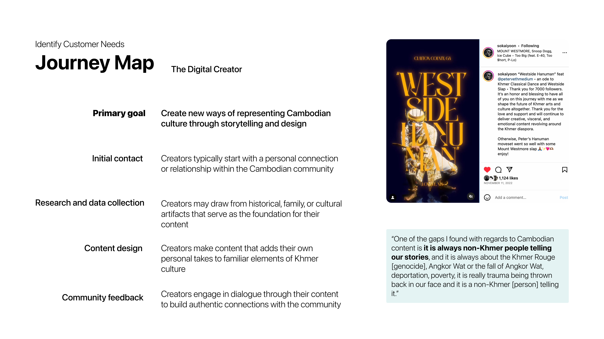
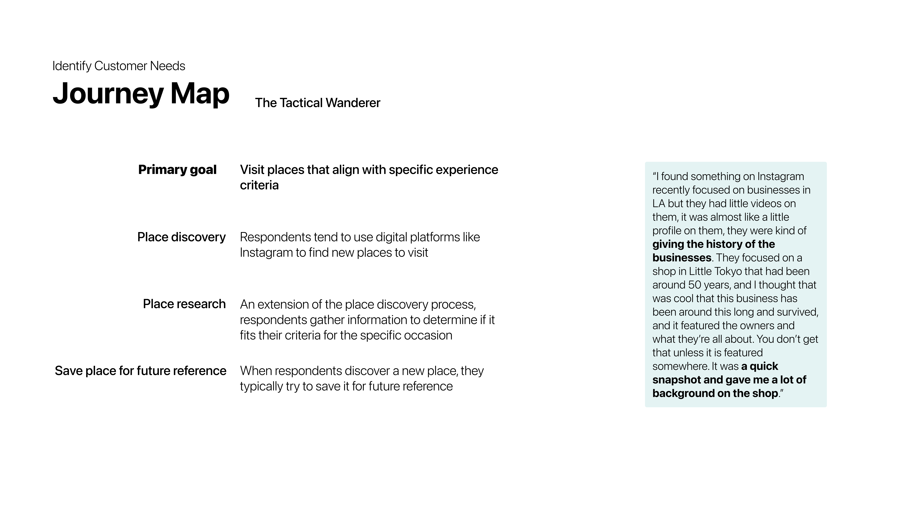
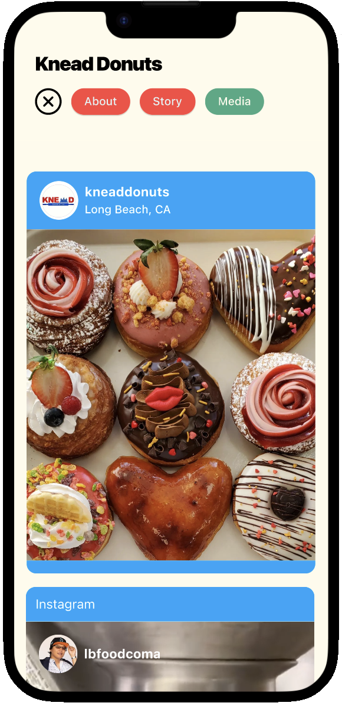
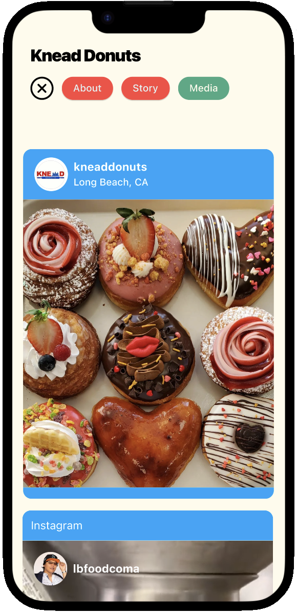
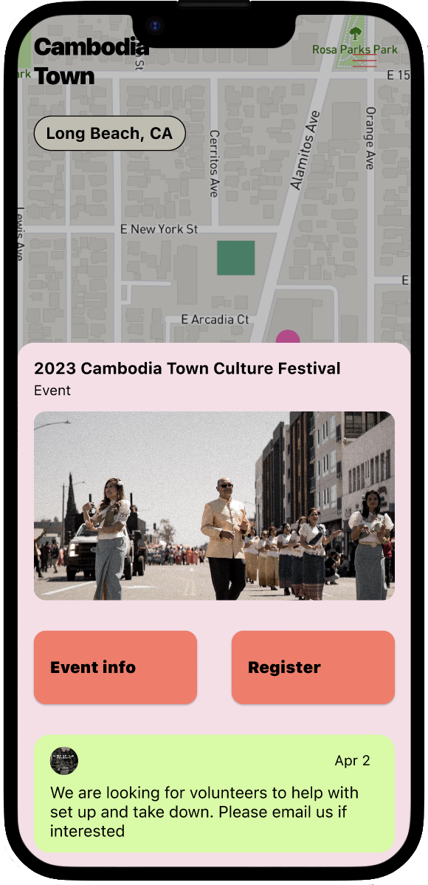
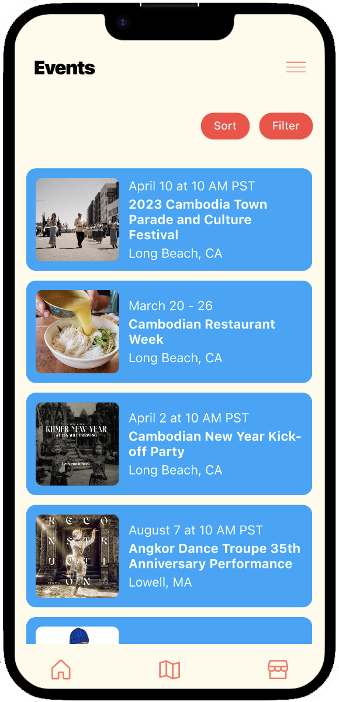
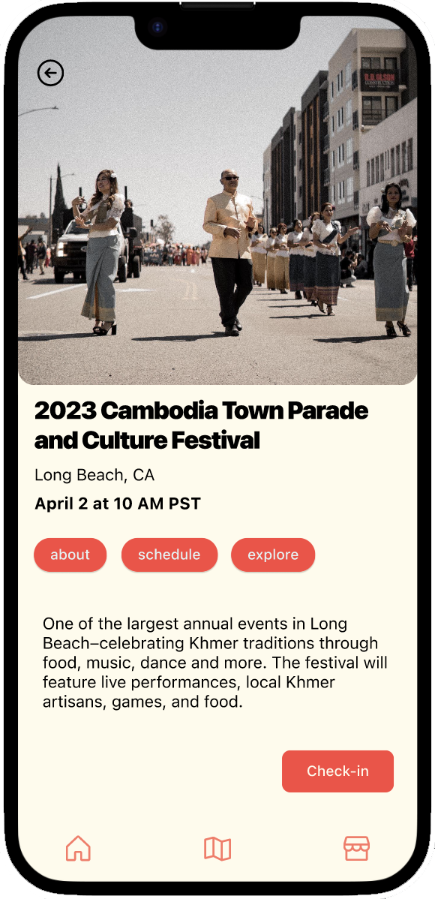

Welcome to Cambodia Town
Executed UX research and design process-from quantitative
and qualitative user research to high-fidelity mobile app
wireframes-to connect Cambodian-American business owners and creators.
Background
For my master's thesis at MIT, I wanted to develop a UX project where I could hone my user research skills and gain hands-on experience with UX/UI design. I also wanted the project to have personal meaning for me.
I am Cambodian-American, and am really interested in small businesses. So I decided to focus on problems facing Cambodian small businesses in the U.S
From initial site visits, data analysis, and interviews with key stakeholders, I found that while traditional brick-and-mortar Cambodian small businesses struggle with customer acquisition, there are a growing number of Cambodian-American digital creators making a living by creating content promoting Cambodian businesses.
Challenge
How might we improve Cambodian-American digital creators to increase customer acquisition and discoverability among Cambodian-American small businesses?
User Interviews
I conducted 10 in-depth interviews with target users
6 interviews with digital creators focused on their current business landscape, including:
- Current goals for their business
- Main tasks and how they accomplish them
- Major pain-points in completing their tasks
4 interviews with consumers focused on place-discovery, covering:
- Objectives when looking for new places and things to do
- Current tools and behaviors for place-discovery
- Major-pain points when it comes to place-discovery
User Personas
Since the problem involves two separate user groups, I identified two primary personas from my user interviews:
The Digital Culture Creator wants to create content with local businesses, but have a hard time making connections beyond family for engagement, participation, and collaboration on projects.

The Tactical Wanderer wants to find local businesses that fit their needs in a particular moment, but feel like it's difficult to find relevant details and reccomendations in one place.

User Journey Maps
Digital Culture Creators involve personal and community connections throughout their process of generating content with local businesses.
Tactical Wanderers look to digital platforms to discover new businesses and specific details that will help them make decisions about whether or not to go to a business–but few platforms do both well.
Design Process
I centered the design process on addressing the most critical needs and processes for project promotion and connection-building expressed by Cambodian-American digital creators, and comprehensive place decision-making for Tactical Wanderers.
Information Architecture
Finding projects


Discovering businesses

 

Attending events
  Next Steps
- Conduct survey among Cambodian American businesses to ensure qualitative findings on core pain-points and goals are generalizable
- Conduct survey among consumers to validate qualitative findings on core pain-points and user goals, and identify any differentiation between subgroups
- Conduct moderated usability testing of low-fidelity prototypes to test key assumptions
- Refine prototype based on survey and usability testing, before conducting more comprehensive usability testing